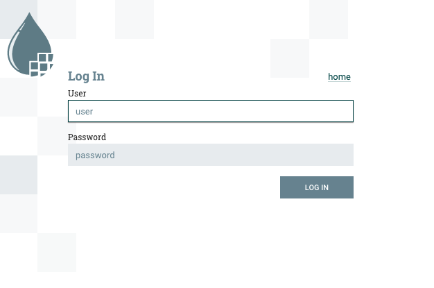

Getting Started
One of the best ways of getting started with a new platform is to try it out. Any big data platform has a lot of moving parts and getting some hands on keyboard time with it helps reinforce learning.
About this guide
Firstly, let’s cover whether this Getting Started guide is right for you. This is intended as a learning tool to discover more about Stackable, its deployment and architecture.
-
If you just want to get up and running quickly there is a quickstart script that will install services on a single node available in the stackable-utils repository on GitHub.
-
If you want to build a production cluster then this is not for you. This tutorial is to familiarise you with the Stackable architecture and is not a guide for building robust clusters.
-
This is intended for use in a private network or lab; it doesn’t enable many security features such as authentication or encryption and should not be directly connected to the Internet. Be careful if you’re deploying in the cloud as your instances may default to using public IPs.
Overview
Stackable is based on Kubernetes and uses this as the control plane to manage clusters. In this guide we will build a simple cluster with 3 services; Apache ZooKeeper, Apache Kafka and Apache NiFi.
Installing Kubernetes
Stackable’s control plane is built around Kubernetes, and we’ll give some brief examples of how to install Kubernetes on your machine.
Installing Kubernetes using Kind
Kind offers a very quick and easy way to bootstrap your Kubernetes infrastructure in Docker. The big advantage of this is that you can simply remove the Docker containers when you’re finished and clean up easily, making it great for testing and development.
If you don’t already have Docker then visit Docker Website to find out how to install Docker. Kind is a single executable that performs the tasks of installing and configuring Kubernetes for you within Docker containers. The Kind Website has instructions for installing Kind on your system.
Once you have both of these installed then you can build a Kubernetes cluster in Docker. We’re going to create a 2 node cluster to test out Stackable, one node hosting the Kubernetes control plane and the other hosting the Stackable services.
kind create cluster --name quickstart --config - << EOF
---
kind: Cluster
apiVersion: kind.x-k8s.io/v1alpha4
nodes:
- role: control-plane
- role: worker
kubeadmConfigPatches:
- |
kind: JoinConfiguration
nodeRegistration:
kubeletExtraArgs:
node-labels: node=quickstart-1
EOFInstalling Kubernetes using K3s
K3s provides a quick way of installing Kubernetes. On your control node run the following command to install K3s:
curl -sfL https://get.k3s.io | sh -s - --write-kubeconfig-mode 644So long as you have an Internet connection K3s will download and automatically configure a simple Kubernetes environment.
root@kubernetes:~# curl -sfL https://get.k3s.io | sh -s - --write-kubeconfig-mode 644
[INFO] Finding release for channel stable
[INFO] Using v1.21.3+k3s1 as release
[INFO] Downloading hash https://github.com/k3s-io/k3s/releases/download/v1.21.3+k3s1/sha256sum-amd64.txt
[INFO] Downloading binary https://github.com/k3s-io/k3s/releases/download/v1.21.3+k3s1/k3s
[INFO] Verifying binary download
[INFO] Installing k3s to /usr/local/bin/k3s
[INFO] Creating /usr/local/bin/kubectl symlink to k3s
[INFO] Creating /usr/local/bin/crictl symlink to k3s
[INFO] Creating /usr/local/bin/ctr symlink to k3s
[INFO] Creating killall script /usr/local/bin/k3s-killall.sh
[INFO] Creating uninstall script /usr/local/bin/k3s-uninstall.sh
[INFO] env: Creating environment file /etc/systemd/system/k3s.service.env
[INFO] systemd: Creating service file /etc/systemd/system/k3s.service
[INFO] systemd: Enabling k3s unit
Created symlink /etc/systemd/system/multi-user.target.wants/k3s.service → /etc/systemd/system/k3s.service.
[INFO] systemd: Starting k3sCreate a symlink to the Kubernetes configuration from your home directory to allow tools like Helm to find the correct configuration.
mkdir ~/.kube
ln -s /etc/rancher/k3s/k3s.yaml ~/.kube/configTesting your Kubernetes installation
To check if everything worked as expected you can use kubectl cluster-info to retrieve the cluster information.
$ kubectl cluster-info
Kubernetes control plane is running at https://127.0.0.1:6443
CoreDNS is running at https://127.0.0.1:6443/api/v1/namespaces/kube-system/services/kube-dns:dns/proxy
Metrics-server is running at https://127.0.0.1:6443/api/v1/namespaces/kube-system/services/https:metrics-server:/proxyInstalling Helm
Stackable uses Helm as the package manager for its Kubernetes operators. This greatly simplifies the deployment and management of Kubernetes operators and CRDs. The quickest way to install Helm is to run the following command:
curl -sfL https://raw.githubusercontent.com/helm/helm/main/scripts/get-helm-3 | /bin/bash -Installing Stackable
Install Stackable Helm Repositories
With Helm installed you can add the Stackable operator repo, where the helm charts to install Stackable operators can be found. There are development, test and a stable repositories available, we’ll be using the stable repo in this guide.
helm repo add stackable-stable https://repo.stackable.tech/repository/helm-stable/Installing Stackable Operators
The Stackable operators are components that translate the service definitions deployed via Kubernetes into deploy services on the worker nodes. These can be installed on any node that has access to the Kubernetes control plane. In this example we will install them on the controller node.
Stackable operators are installed using Helm charts. Run the following commands to install the operators for ZooKeeper, Kafka and NiFi using the repo configured earlier. The --devel flag will choose the latest available version; alternatively the --version flag can be used to deploy a specific version.
Installing from the Stackable test repository
helm install zookeeper-operator stackable-stable/zookeeper-operator --version=0.9.0
helm install kafka-operator stackable-stable/kafka-operator --version=0.5.0
helm install secret-operator stackable-stable/secret-operator --version=0.2.0
helm install nifi-operator stackable-stable/nifi-operator --version=0.5.0You can check which operators are installed using helm list:
user@quickstart:~/stackable-utils/quickstart$ helm list
NAME NAMESPACE REVISION UPDATED STATUS CHART APP VERSION
kafka-operator default 1 2022-02-15 08:17:26.84659409 +0000 UTC deployed kafka-operator-0.5.0 0.5.0
nifi-operator default 1 2022-02-15 08:17:37.93720808 +0000 UTC deployed nifi-operator-0.5.0 0.5.0
secret-operator default 1 2022-02-15 08:17:32.700301793 +0000 UTC deployed secret-operator-0.2.0 0.2.0
zookeeper-operator default 1 2022-02-15 08:17:17.893844595 +0000 UTC deployed zookeeper-operator-0.9.0 0.9.0Deploying Stackable Services
At this point you’ve successfully deployed Kubernetes and the Stackable operators we need and are ready to deploy services to the cluster. To do this we provide service descriptions to Kubernetes for each of the services we wish to deploy.
Apache ZooKeeper
We will deploy an Apache ZooKeeper instance to our cluster.
kubectl apply -f - <<EOF
---
apiVersion: zookeeper.stackable.tech/v1alpha1
kind: ZookeeperCluster
metadata:
name: simple-zk
spec:
servers:
roleGroups:
primary:
replicas: 1
config:
myidOffset: 10
version: 3.5.8
stopped: false
EOFApache Kafka
We will deploy an Apache Kafka broker that depends on the ZooKeeper service we just deployed. The zookeeperReference property below points to the namespace and name we gave to the ZooKeeper service deployed previously.
kubectl apply -f - <<EOF
---
apiVersion: kafka.stackable.tech/v1alpha1
kind: KafkaCluster
metadata:
name: simple-kafka
spec:
version: 2.8.1
zookeeperConfigMapName: simple-kafka-znode
brokers:
roleGroups:
brokers:
replicas: 1
---
apiVersion: zookeeper.stackable.tech/v1alpha1
kind: ZookeeperZnode
metadata:
name: simple-kafka-znode
spec:
clusterRef:
name: simple-zk
namespace: default
EOFApache NiFi
We will next deploy an Apache NiFi server.
kubectl apply -f - <<EOF
---
apiVersion: zookeeper.stackable.tech/v1alpha1
kind: ZookeeperZnode
metadata:
name: simple-nifi-znode
spec:
clusterRef:
name: simple-zk
---
apiVersion: v1
kind: Secret
metadata:
name: nifi-admin-credentials-simple
stringData:
username: admin
password: AdminPassword
---
apiVersion: nifi.stackable.tech/v1alpha1
kind: NifiCluster
metadata:
name: simple-nifi
spec:
version: "1.15.0"
zookeeperConfigMapName: simple-nifi-znode
authenticationConfig:
method:
SingleUser:
adminCredentialsSecret:
name: nifi-admin-credentials-simple
autoGenerate: true
sensitivePropertiesConfig:
keySecret: nifi-sensitive-property-key
autoGenerate: true
nodes:
roleGroups:
default:
selector:
matchLabels:
kubernetes.io/os: linux
config:
log:
rootLogLevel: INFO
replicas: 1
EOFYou can check the status of the services using kubectl get pods. This will retrieve the status of all pods running in the default namespace.
root@kubernetes:~# kubectl get pods
$ kubectl get pods
NAME READY STATUS RESTARTS AGE
nifi-operator-deployment-64c98c779c-nw6h8 1/1 Running 0 24m
kafka-operator-deployment-54df9f86c7-psqgd 1/1 Running 0 24m
zookeeper-operator-deployment-767458d4f5-2czb9 1/1 Running 0 24m
secret-operator-daemonset-pddkv 2/2 Running 0 24m
simple-zk-server-primary-0 1/1 Running 0 23m
simple-kafka-broker-brokers-0 2/2 Running 0 21m
simple-nifi-node-default-0 1/1 Running 0 22mSince this is the first time that each of these services has been deployed to these nodes the Stackable Agent needs to download the software from the Stackable repository. It may take a few minutes to complete the download and deploy the services. Once all of the pods are in the running state your cluster should be ready to use.
Testing your cluster
If all has gone well then you will have successfully deployed a Stackable cluster and used it to start three services that should now be ready for you.
Apache ZooKeeper
We can test ZooKeeper by running the ZooKeeper CLI shell. The easiest way to do this is to run the CLI shell on the pod that is running ZooKeeper.
kubectl exec -i -t simple-zk-server-primary-0 -- bin/zkCli.shThe shell should connect automatically to the ZooKeeper server running on the pod. You can run the ls / command to see the list of znodes in the root path, which should include those created by Apache Kafka and Apache NiFi.
[zk: localhost:2181(CONNECTED) 0] ls /
[nifi, znode-17b28a7e-0d45-450b-8209-871225c6efa1, zookeeper]Apache Kafka
To test Kafka we’ll use the tool kafkacat.
sudo apt install kafkacat
With kafkacat installed we can connect to Kafka and query the metadata on the broker running on localhost. To do this we first need to find which port Kafka is listening on.
$ kubectl get svc simple-kafka
NAME TYPE CLUSTER-IP EXTERNAL-IP PORT(S) AGE
simple-kafka NodePort 10.43.20.5 <none> 9092:31909/TCP 44mHere we can the see default Kafka port 9092 has been mapped to port 31909. We can use this to configure kafkacat to connect to the broker.
$ kafkacat -b localhost:31909 -L
Metadata for all topics (from broker -1: localhost:31909/bootstrap):
1 brokers:
broker 1001 at 192.168.40.120:31976 (controller)
0 topics:Apache NiFi
Apache NiFi provides a web interface and the easiest way to test it is to view this in a web browser. As with the Kafka example above we need to find which port NiFi is listening on.
$ kubectl get svc simple-nifi
NAME TYPE CLUSTER-IP EXTERNAL-IP PORT(S) AGE
simple-nifi NodePort 10.43.75.25 <none> 8443:30247/TCP 49mBrowse to the address of your Kubernetes node on port 30247 e.g. https://quickstart.local:30247/nifi and you should see the NiFi login screen.

The Apache NiFi operator will automatically generate the admin user credentials with a random password and store it as a Kubernetes secret in order to provide some security out of the box. You can retrieve this password for the admin user with the following kubectl command.
kubectl get secrets nifi-admin-credentials-simple -o jsonpath="{.data.password}" | base64 -d && echo
4tkInc6UyBuWvbcYour password will be different to the one above and will be different every time you install a new cluster. Once you have these credentials you can login and you should see a blank NiFi canvas.